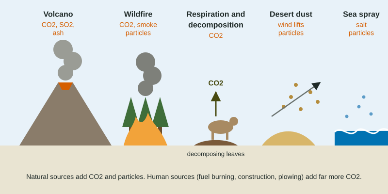

Most of Unit 7 is about pollution people make. This topic is a reminder that nature makes some of the same things. Carbon dioxide and particulate matter both have large natural sources, and the particles harm lungs whatever their origin.
Natural sources of carbon dioxide

- Respiration. Every animal, plant, fungus and microbe releases CO2 as it breaks down food for energy.
- Decomposition. Decomposers break down dead leaves, wood and bodies and release their carbon as CO2.
- Wildfires. Burning plants release the carbon they stored, quickly, as CO2.
- Volcanoes. Eruptions and vents release CO2 from deep in the Earth, along with sulfur dioxide and ash.
Natural sources and natural sinks, such as photosynthesis and the oceans, were roughly in balance before people began burning fossil fuels. A common myth says volcanoes release more CO2 than people. They do not. USGS estimates put all the world's volcanoes at well under 1 billion metric tons of CO2 a year, while human activities release more than 35 billion metric tons, roughly 100 times as much.
Natural sources of particulate matter
| Natural sources | Human sources |
|---|---|
| volcanic ash | coal and diesel soot |
| smoke from wildfires started by lightning | smoke from burning crops, trash and wood stoves |
| dust blown from deserts and dry lake beds | dust from construction, unpaved roads and plowed fields |
| sea salt spray | industrial processes such as cement making |
| pollen and spores | vehicle tire and brake wear |
Human actions can also make natural sources bigger. Draining a lake exposes a dry bed that the wind turns into dust. Drought and hotter summers make wildfire seasons longer.
Haze: what particles do to light
Particles in the air scatter and absorb sunlight. Less light travels straight from a distant hill to your eye, so the hill fades into a gray or brown blur. That is haze. During heavy wildfire smoke, visibility can drop from tens of kilometers to a few, and the sun can look orange or red.
Health: a particle is a particle
The body cannot tell a natural particle from a human one. Fine particles, PM2.5, slip past the nose and throat and reach the deepest air sacs of the lungs, and some cross into the blood. Wildfire smoke days bring more asthma attacks, heart problems and hospital visits.
Worked example: how much you breathe in. An adult breathes about 11,000 liters of air a day, which is 11 cubic meters. On a smoky day PM2.5 is 150 µg per m³. How many micrograms of fine particles does the person breathe in?
Setup: . The cubic meters cancel. Answer: of PM2.5 in one day.
When a question gives a concentration per cubic meter and a volume in liters, convert first: 1,000 L is 1 m³.
Why natural sources still matter for policy
Air quality rules count every particle, so a region with a lot of natural dust or smoke can exceed its limit on days when its own factories and cars are no worse than usual. That is one reason exam questions ask you to read a source table carefully. When you propose a solution, aim it at the source people can change. You cannot stop a volcano, but you can pave a dusty road, wet down a construction site, keep water in a shrinking lake, or thin a dry forest so fires burn less intensely. Name the source, then say how your action stops particles from reaching the air.